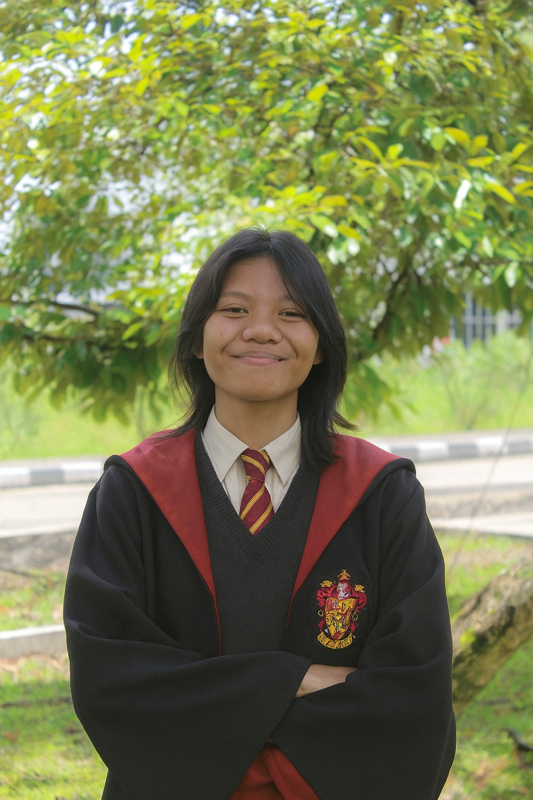

Pimpinan Fakultas
Prof. Dr. Albus Aurelius, Ph.D.
Dekan FSRDPakar Teori Sihir Kuno & Etika Transfigurasi. Mengawasi operasional dan etika di seluruh Program Studi.
HubungiKepala Program Studi (Kaprodi)
Jesika Tan, S.Arc., M.Arc., S.Mys., M.Mys.
Kaprodi RavenclawBidang: Ilmu Pengetahuan Mantra Terapan & Astrologi Sihir.

Kania Kirani, S.Val., M.Val., S.BrV., M.Cor
Kaprodi GryffindorBidang: Taktik Duel, Pertahanan Jarak Dekat & Hukum Magis.

Syafira Aulianisa, S.Har., S.Eth., M.Har., M.Dev
Kaprodi HufflepuffBidang: Herbologi Tanaman Sentien & Konservasi Habitat Magis.

Viona Daniella Bira, S.Amb., S.Str., M.Ser., D.Sly
Kaprodi SlytherinBidang: Ilmu Politik, Strategi Kepemimpinan & Rekayasa Daya.